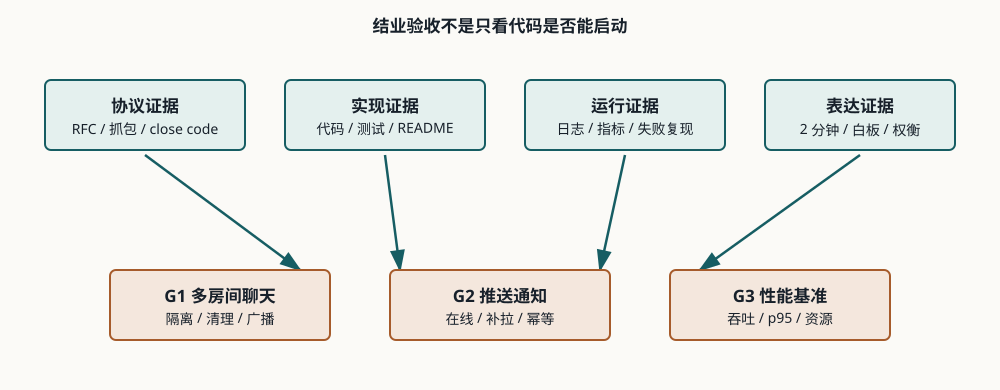

Lesson 0012 · Final Assessment
用证据讲清 WebSocket
本课的目标不是再记几个 API，而是证明你能从协议、代码、运行数据和架构权衡四个角度独立处理实时系统问题。

1. 结业证据清单
| 项目 | 必须证明 | 最小证据 |
|---|---|---|
| G1 多房间聊天 | 房间隔离、加入/离开、广播、断开清理。 | 独立代码、协议、测试、两个房间的验证和一个串房间/脏成员失败案例。 |
| G2 推送通知 | 在线推送、离线补拉、ACK/幂等、多实例限制。 | 独立代码、在线/离线请求记录、重复处理说明和多实例架构图。 |
| G3 性能基准 | 100 × 10 msg/s、256 字节、60 秒、重复 3 次。 | 每次原始输出、吞吐、p50/p95、错误率、CPU、内存和瓶颈解释。 |
README、架构图、消息协议、启动命令、关键日志/指标和失败案例不是附属文档，而是验收证据的一部分。
2. 故障排查顺序
遇到“WebSocket 不工作”时，按边界逐层缩小问题，不要直接改业务 Handler：
- 连接：DNS、端口、TLS、代理是否可达？
- 握手：请求路径、Host、Origin、认证、Upgrade 和响应状态是否正确？是否为 101？
- 协议：是否发生帧错误、版本/子协议不匹配或 Close code 异常？
- 生命周期：心跳、idle timeout、重连、session 清理是否正常？
- 路由：房间、用户、设备或实例之间是否映射错误？
- 资源：慢客户端、队列、线程、GC、CPU、内存或连接数是否成为瓶颈？
3. 源码导读：如何审查一个 WebSocket 项目
入口层：握手、Origin、认证、路径
↓
协议层：消息格式、大小、版本、错误
↓
状态层：session、房间/用户/设备索引、清理
↓
投递层：发送顺序、并发、队列、慢客户端
↓
可靠性层：ACK、幂等、补拉、重试、持久化
↓
运维层：日志、指标、close code、代理和容量
审查源码时先找状态的所有者和生命周期，再看并发边界。一个常见危险信号是：连接存进 Map，却没有对应的 close/timeout 清理；或者发送直接调用，没有队列、超时和失败处理。
4. 附录 E 高频题验收
每题用 60~120 秒回答，结构固定为“结论 → 原因 → 限制/取舍 → 如何验证”。下面的问题不要求背诵标准原文，但必须能落到抓包、代码或指标。
- WebSocket 与轮询/长轮询的连接模型、延迟和资源差异是什么？
- Opening Handshake 中
Upgrade、Connection、Sec-WebSocket-Key、Sec-WebSocket-Accept和101分别做什么？ - 为什么
Sec-WebSocket-Key不是身份认证？WebSocket 鉴权放在哪里？ - 握手返回 200、401、404 或代理超时时，如何用抓包和日志定位？
- Ping/Pong、业务心跳、TCP keepalive 和代理 idle timeout 有什么区别？
- WebSocket 如何做 Origin 校验、断线重连和多实例水平扩展？
- 裸 WebSocket、STOMP、SockJS 分别解决什么问题，如何选型？
- WebSocket 与 MQTT 如何分工？什么时候需要 MQTT Broker ↔ Java 后端 ↔ WebSocket 桥接？
- Spring/Tomcat 已经够用时，为什么还要或不该引入 Netty？
5. 面试表达模板
问题：用户需要什么实时能力？ 方案：连接模型、消息协议、状态归属、故障处理是什么？ 权衡：延迟、资源、可靠性、安全、复杂度和扩展成本如何取舍？ 验证：用什么抓包、测试、日志和指标证明方案有效？ 边界：单机、多实例、代理故障和慢客户端时哪里会变化？
例如 G2 不要只说“使用 WebSocket 推送”。应说明：在线连接由谁持有，离线通知保存在哪里，ACK 如何幂等，多实例如何把事件送到连接所在节点，断线后客户端如何补拉。
6. 练习：模拟验收
先不要展开答案，按面试方式回答下面 4 题，并附上你会查看的证据：
- 握手返回 200，但页面认为连接失败。你如何定位？
查看答案
200 是普通 HTTP 响应，不是协议升级成功。先看 DevTools 请求/响应头、网关 Upgrade 转发、路径映射和服务端握手日志；必须得到 101 才进入帧层排查。
- G1 中不同房间串消息。优先审查哪些状态和调用？
查看答案
审查广播入口是否按 room 查成员，是否误用全局 session 集合，加入/离开是否同步更新双向索引，并用两个房间的集成测试复现。
- G2 多实例中 HTTP 发布成功但用户没收到。如何解释？
查看答案
发布请求可能到达不持有用户 WebSocket 的实例。本地连接 Map 不可见，需要共享消息总线、连接目录定向路由或专用 Gateway，并记录投递失败和补偿路径。
- G3 p50 为 20ms、p95 为 900ms，你会怎样回答？
查看答案
先说明尾延迟严重，不能只看 p50。检查 GC、线程/锁竞争、慢客户端、代理、队列深度和 CPU/内存，重复实验确认；再根据证据决定优化，而不是直接换框架。
快速检查：一个可信的性能结论至少需要什么？